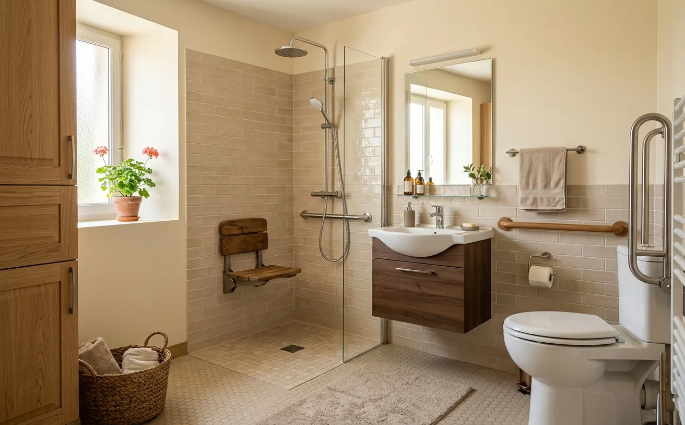

À retenir
- ·Adaptation légère : 500 – 2 000 € · zone douche : 3 000 – 9 000 € · pièce complète : 8 000 – 15 000 € et plus (estimations 2026).
- ·Ce qui distingue ce budget de celui d’une douche : WC, lavabo, porte, sol complet et circulation.
- ·Premiers facteurs de coût : déplacement des réseaux, état des supports, menuiserie.
- ·MaPrimeAdapt’ peut couvrir 50 à 70 % des dépenses éligibles, sous conditions, avant travaux.
- ·Un devis détaillé zone par zone est la seule base fiable de décision.
Le prix d’une salle de bain adaptée selon le périmètre
Estimations nationales 2026Une salle de bain adaptée peut faciliter l’entrée, la circulation, la toilette, le transfert, l’usage assis, l’aide d’un proche, l’accès au lavabo et aux WC. Tout ne se fait pas d’un coup : le budget suit le périmètre choisi.
Les niveaux 1 et 2 sont couverts en détail par nos guides Équipements pour sécuriser une douche et Prix d’une douche senior — ce guide se concentre sur ce qui s’ajoute au-delà de la douche.
Le budget zone par zone
Le poste principal : receveur, étanchéité, revêtement, paroi, siège et barres. Synthèse ici, détail complet dans le guide dédié.
Du simple rehausseur avec barres latérales au remplacement par une cuvette à hauteur confortable (choisie selon la personne, pas de hauteur universelle), voire un déplacement — qui fait bondir le poste plomberie. Barres d’appui de part et d’autre selon le geste de transfert.
Vasque à hauteur adaptée avec dégagement dessous pour l’usage assis, robinetterie à levier, miroir utilisable assis comme debout, siphon déporté, rangements atteignables. Le déplacement des canalisations est là aussi le facteur de variation principal.
Porte, sol et réseaux : les postes qu’on oublie
- ·Porte et circulation (600 – 2 500 €) — élargir le passage, inverser le sens d’ouverture ou poser une porte coulissante libère l’espace intérieur ; toucher à une cloison a des répercussions au-delà de la salle de bain (couloir, électricité attenante).
- ·Sol complet (800 – 3 000 €) — dépose, reprise du support, revêtement à glissance réduite posé en continu, sans ressaut entre les zones. Les dégâts d’humidité découverts à la dépose se traitent avant tout revêtement.
- ·Électricité, éclairage, ventilation (400 – 2 000 €) — éclairage général et ciblé sans ombre, commandes accessibles, prises repositionnées, VMC créée ou remise à niveau, mise en conformité liée au projet. Travaux d’électricien, pas de bricolage en zone humide.
- ·Étude et conception (0 – 1 500 €) — plans et implantation par l’entreprise (souvent inclus), ergothérapeute pour les besoins complexes, maître d’œuvre pour les projets lourds. Aucun de ces intervenants n’est systématiquement obligatoire.
Salle de bain utilisable en fauteuil : ce qui change le budget
Quand la pièce doit fonctionner avec un fauteuil roulant, trois exigences s’ajoutent et expliquent les budgets supérieurs : une porte et une circulation dimensionnées pour le passage et le demi-tour, une douche de plain-pied avec espace de transfert et siège adapté, et des équipements repensés — lavabo dégagé dessous, WC à bonne hauteur de transfert, commandes et rangements atteignables assis. Le projet relève alors presque toujours du niveau 5, souvent au-delà de 12 000 €, et gagne à être conçu avec un ergothérapeute. Les critères d’usage sont détaillés dans notre guide Douche senior ou douche PMR.
Quatre exemples de budgets complets
Scénarios fictifs à titre pédagogique — chaque projet réel passe par un devis après visite. Les aides citées supposent l’éligibilité et l’accord préalable.
Barres, siège, mitigeur, éclairage renforcé, WC rehaussé. ≈ 2 300 €. Non inclus : revêtements. Sans aide mobilisée.
Douche extra-plate équipée, WC remplacé avec barres, sol de la zone repris. ≈ 8 200 €. Ménage modeste, MaPrimeAdapt’ 50 % : reste à charge ≈ 4 100 €.
Trois zones adaptées, sol complet, éclairage refait, réseaux conservés. ≈ 11 500 €. Ménage très modeste, MaPrimeAdapt’ 70 % : reste à charge ≈ 3 450 €.
Porte élargie, plain-pied avec transfert, lavabo dégagé, WC repositionné, ventilation. ≈ 16 000 €. MaPrimeAdapt’ 70 % sur 15 400 € max : reste à charge ≈ 5 220 €.
Aides et accompagnement
La salle de bain est au cœur des travaux couverts par MaPrimeAdapt’ : 50 % ou 70 % des dépenses éligibles selon les ressources, dans la limite de 22 000 € de travaux — un plafond rarement atteint par une douche seule, mais pertinent pour une pièce complète. Le parcours prévoit un accompagnement (AMO) : diagnostic du logement, définition du projet, dossier. APA, PCH, caisses de retraite et aides locales peuvent compléter selon la situation. Conditions et démarches.
Attention — plus le projet est ample, plus l’enjeu de l’accord préalable est grand : ne commencez aucun poste avant les accords, et signez « sous réserve d’obtention des aides ».
Lire le devis et maîtriser le budget
Un devis de salle de bain adaptée se lit zone par zone : plans d’implantation, dépose et évacuation, produits avec marques et références, plomberie, électricité, étanchéité, renforts, siège et barres, porte, sol, murs, ventilation, finitions — plus les délais, garanties, la gestion des imprévus (avenant chiffré) et la liste explicite des travaux exclus. Chaque zone doit pouvoir être acceptée ou reportée séparément.
Pour maîtriser le budget sans sacrifier l’usage : hiérarchisez les difficultés réelles (tout n’est pas urgent), conservez l’implantation des réseaux quand c’est possible, choisissez les équipements avant les finitions pour intégrer les renforts, comparez les matériaux à performance équivalente, et gardez une marge pour les découvertes à la dépose. Reporter une zone se prépare : faire poser les renforts et les réservations dès maintenant coûte peu et évite de rouvrir les murs plus tard.
Estimer votre projet de salle de bain adaptée
Décrivez les zones que vous souhaitez adapter et indiquez votre code postal pour vérifier les solutions disponibles dans votre secteur. Gratuit et sans engagement.
Questions fréquentes
Combien coûte une salle de bain adaptée complète ?
Entre 8 000 et 15 000 € posés pour une réorganisation complète, en estimation nationale 2026 — davantage avec élargissement de porte ou conception pour fauteuil. Les projets partiels (douche + WC) se situent entre 5 000 et 11 000 €.
Peut-on adapter seulement la douche ?
Oui, c’est même le projet le plus courant (3 000 – 9 000 €). Ce guide devient utile quand d’autres zones posent aussi problème — WC, lavabo, porte — et que la question du « tout d’un coup ou par étapes » se pose.
Combien coûte l’adaptation des WC ?
De 400 € (rehausseur et barres posés) à 2 500 € (remplacement par une cuvette à hauteur adaptée avec barres sur renforts). Un déplacement des WC fait basculer le poste plomberie bien au-delà.
Faut-il élargir la porte ?
Seulement si le passage actuel gêne la personne ou son aide technique. Inverser le sens d’ouverture ou poser une porte coulissante règle souvent le problème pour moins cher qu’une reprise de cloison.
Une petite salle de bain peut-elle être adaptée ?
Oui : receveur compact, porte coulissante, meuble suspendu, WC et lavabo repositionnés au besoin. Dans les pièces très contraintes, la réorganisation complète est parfois plus efficace que l’accumulation d’équipements.
Quel prix pour une salle de bain accessible en fauteuil ?
Le plus souvent au-delà de 12 000 € : porte et circulation dimensionnées, plain-pied avec transfert, lavabo dégagé, WC adaptés. La conception avec un ergothérapeute évite les erreurs coûteuses.
Combien de temps dure la rénovation ?
De 2 – 5 jours pour la zone douche à 2 – 3 semaines pour une pièce complète, selon les corps de métier et les délais de fourniture (paroi sur mesure, meuble adapté). Le calendrier zone par zone figure au devis.
MaPrimeAdapt’ peut-elle financer une salle de bain complète ?
Oui : le plafond de 22 000 € de travaux éligibles couvre largement une pièce complète, à 50 % ou 70 % selon les ressources, sous conditions et avec accord préalable. Voir les conditions.
Un locataire peut-il faire adapter sa salle de bain ?
Oui, avec l’accord écrit du propriétaire pour les transformations permanentes. Certaines aides concernent aussi les locataires — un dossier solide (devis, aides mobilisables) facilite l’accord du bailleur.
Comment calculer le reste à charge ?
Devis retenu × taux d’aide (50 % ou 70 % pour MaPrimeAdapt’, dans la limite des dépenses éligibles), moins les compléments éventuels (caisse de retraite, aide locale). L’AMO ou un conseiller France Rénov’ valide le calcul avant engagement.
Sources
Les fourchettes de ce guide sont des estimations nationales. Elles ne constituent pas un devis.